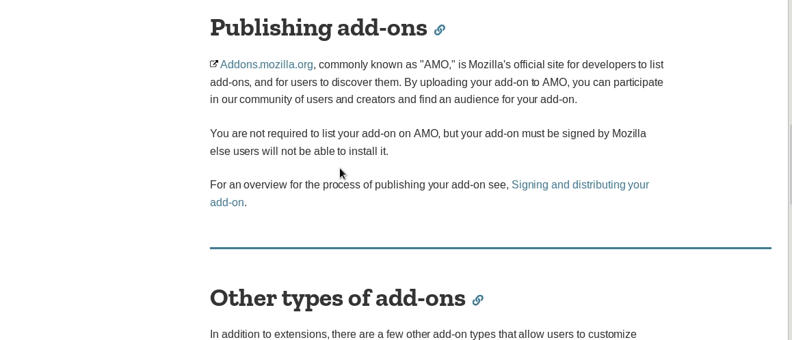
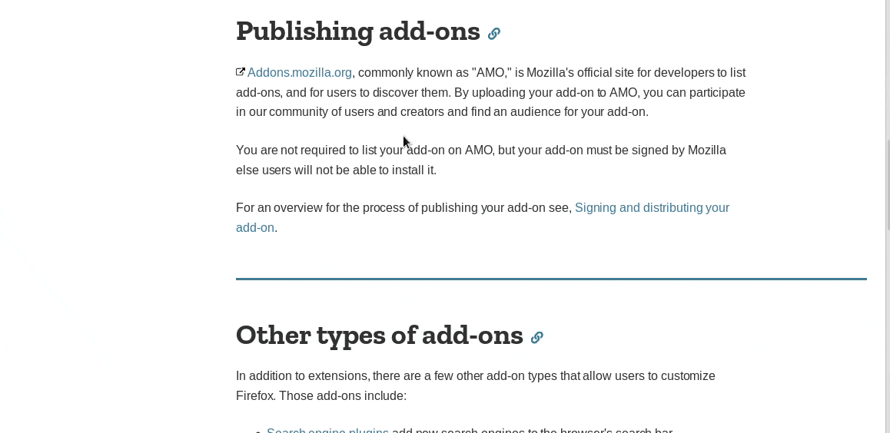

×
# Probado con exito en Firefox Quantum
* version 64.0(64-bits)
* Solo para plataforma de Escritorio.
* Fedora - 1.0
# En plataforma Fedora 29
* Procesador Intel Core i7.
* Gráficos NVD9
* Gnome 3.30.2.
* Tipo de SO 64 bits.
* ---------------------------------------
# 2019 @ Enero/14
Elinv search on Google
Actualización del Traductor Elinv en Google ## Traductor de Google por Elinv
[Compatible con la última version de Firefox] (Solo para plataforma de Escritorio)
* --------------------------------------# Probado con exito en Firefox Quantum
* version 64.0(64-bits)
* Solo para plataforma de Escritorio.
* Fedora - 1.0
# En plataforma Fedora 29
* Procesador Intel Core i7.
* Gráficos NVD9
* Gnome 3.30.2.
* Tipo de SO 64 bits.
* ---------------------------------------
×
* Las Teclas Ctrl+Shift+L
- * Despliegan u ocultan un corrector ortográfico
que a su vez permite guardar para la página
web visitada, un recordatorio.
- * Al volver a visitar esa página web, el recordatorio
seguirá estando dentro de este mini notepad y
corrector ortográfico.
* Ha sido mejorada la multitraducción
- * Con resultados en pantalla de los múltiples
idiomas traducidos, y un link creado a los
efectos de mostrar la definición en google
del término o frase traducida.
- * En el modo multitraducción, solo es posible
traducir una texto o párrafo seleccionado
a la vez.
- * En el modo "Traducir selección en el lugar"
es posible traducir múltiples textos o párrafos
seleccionados.
- * A su vez si se posiciona el mouse sobre dicho link,
el title o alt mostrará el texto original de la
traducción, en un tooltips, como así los idiomas a
que ha sido traducido.
×
* Sobre el texto o parrafo seleccionado
- * Se permite lo siguiente:
~ --------------------------------------------------------
~ Traducir en google con reemplazo de la traducción
en el lugar del texto seleccionado.
~ Traducir directamente el texto seleccionado en la
pagina web de google
~ Traducir pagina web entera.
~ --------------------------------------------------------
~ Buscar en google
~ La definición en google
~ La definición en Wikipedia
~ La definición en Wordreference
~ La definición en que-significa.com
~ --------------------------------------------------------
~ Multitraducir el texto seleccionado a los idiomas que se
le permite elegir, no pudiéndo ser mas de 10 en esta
version.
~ --------------------------------------------------------
×
# Traducido el programa a [44 idiomas]()
### Idiomas traducidos:
- Africano af-AF.properties
- Arabe ar-AR.properties
- Búlgaro bg-BG.properties
- Bosnio bs-BS.properties
- Catalán ca-CA.properties
- Alemán de-DE.properties
- Griego el-EL.properties
- Ingles en-US.properties
- Español es-ES.properties
- Vasco eu-EU.properties
- Persa fa-FA.properties
- Finlandés fi-FI.properties
- Francés fr-FR.properties
- Irlantes ga-GA.properties
- Húngaro hu-HU.properties
- Armenio hy-HY.properties
- Indonesio id-ID.properties
- Islandés is-IS.properties
- Italiano it-IT.properties
- Hebreo iw-IW.properties
- Japonés ja-JA.properties
- Coreano ko-KO.properties
- Latín la-LA.properties
- Lituano lt-LT.properties
- Mongol mn-MN.properties
- Holandes nl-NL.properties
- Noruego no-NO.properties
- Polaco pl-PL.properties
- Portugués pt-PT.properties
- Rumano ro-RO.properties
- Ruso ru-RU.properties
- Eslovaco sk-SK.properties
- Esloveno sl-SL.properties
- Albanés sq-SQ.properties
- Serbio sr-SR.properties
- Sueco sv-SV.properties
- Tailandés th-TH.properties
- Filipino tl-TL.properties
- Turco tr-TR.properties
- Ucraniano uk-UK.properties
- Vietnamita vi-VI.properties
- Yiddish yi-YI.properties
- Chino Tradicional zh-CN.properties
- Chino Simplificado zh-TW.properties
* ------------------------------
- [Elinv](@Argentina)
* ------------------------------
×
# Successfully tested in Firefox Quantum
* version 64.0(64-bits)
* Only for Desktop platform.
* Fedora - 1.0
# On platform Fedora 29
* Processor Intel Core i7.
* Graphics NVD9
* Gnome 3.30.2.
* Kind of SO 64 bits.
* ---------------------------------------
# 2019 @ Enero/14
Elinv search on Google
Elinv Translator Update on Google ## Google Translation by Elinv
[Compatible with the latest version of Firefox] (Only for Desktop platform)
* --------------------------------------# Successfully tested in Firefox Quantum
* version 64.0(64-bits)
* Only for Desktop platform.
* Fedora - 1.0
# On platform Fedora 29
* Processor Intel Core i7.
* Graphics NVD9
* Gnome 3.30.2.
* Kind of SO 64 bits.
* ---------------------------------------
×
* The keys Ctrl+Shift+L
- * Deploy or hide a spell checker
which in turn allows saving for the page
visited website, a reminder.
- * When you revisit that web page, the reminder
will remain inside this mini notepad and
spelling checker.
* Multithreading has been improved
- * With multiple screen results
translated languages, and a link created to the
effects of showing the definition in google
of the term or phrase translated.
- * In multitracking mode, it is only possible
translate a selected text or paragraph
both.
- * In the "Translate selection in place" mode
it is possible to translate multiple texts or paragraphs
selected.
- * In turn, if the mouse is positioned on said link,
The title or alt will show the original text of the
translation, in a tooltips, as well as the languages
which has been translated.
×
* About the selected text or paragraph
- * The following is allowed:
~ --------------------------------------------------------
~ Translate in google with replacement of the translation
in the place of the selected text.
~ Directly translate the selected text in the
google website
~ Translate entire web page.
~ --------------------------------------------------------
~ Search in Google
~ The definition of google
~ The definition of Wikipedia
~ The definition of the pair
~ The definition of-significa.com
~ --------------------------------------------------------
~ Multitracking the selected text to the languages that are
allows you to choose, not being able to be more than 10
in this version.
~ --------------------------------------------------------
×
# Translated the program to [44 languages]
### Translated languages:
- Africano af-AF.properties
- Arabe ar-AR.properties
- Búlgaro bg-BG.properties
- Bosnio bs-BS.properties
- Catalán ca-CA.properties
- Alemán de-DE.properties
- Griego el-EL.properties
- Ingles en-US.properties
- Español es-ES.properties
- Vasco eu-EU.properties
- Persa fa-FA.properties
- Finlandés fi-FI.properties
- Francés fr-FR.properties
- Irlantes ga-GA.properties
- Húngaro hu-HU.properties
- Armenio hy-HY.properties
- Indonesio id-ID.properties
- Islandés is-IS.properties
- Italiano it-IT.properties
- Hebreo iw-IW.properties
- Japonés ja-JA.properties
- Coreano ko-KO.properties
- Latín la-LA.properties
- Lituano lt-LT.properties
- Mongol mn-MN.properties
- Holandes nl-NL.properties
- Noruego no-NO.properties
- Polaco pl-PL.properties
- Portugués pt-PT.properties
- Rumano ro-RO.properties
- Ruso ru-RU.properties
- Eslovaco sk-SK.properties
- Esloveno sl-SL.properties
- Albanés sq-SQ.properties
- Serbio sr-SR.properties
- Sueco sv-SV.properties
- Tailandés th-TH.properties
- Filipino tl-TL.properties
- Turco tr-TR.properties
- Ucraniano uk-UK.properties
- Vietnamita vi-VI.properties
- Yiddish yi-YI.properties
- Chino Tradicional zh-CN.properties
- Chino Simplificado zh-TW.properties
* ------------------------------
- [Elinv](@Argentina)
* ------------------------------
×

×

×

×